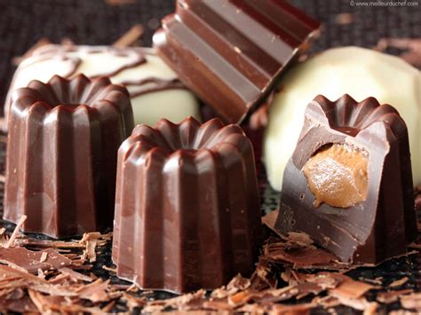

Variantes
Des déclinaisons créatives et délicieuses
Le cannelé classique est une merveille, mais les chefs et pâtissiers aiment revisiter cette gourmandise avec créativité :
- Cannelé au chocolat : remplacez une partie de la farine par du cacao en poudre pour une version intense.
- Cannelé à la pistache : ajoutez de la pâte de pistache et quelques éclats pour une touche originale.
- Version salée : remplacez le sucre par du fromage râpé, ajoutez des herbes et du jambon pour un apéritif étonnant.
- Cannelé vegan : utilisez du lait végétal, de la fécule et une margarine sans lactose.
- Cannelé à la fleur d’oranger : une alternative au rhum qui apporte une douceur florale subtile.
Les possibilités sont infinies, tant que l’on respecte l’essence du cannelé : cette croûte foncée et caramélisée qui protège un cœur tendre et savoureux.
